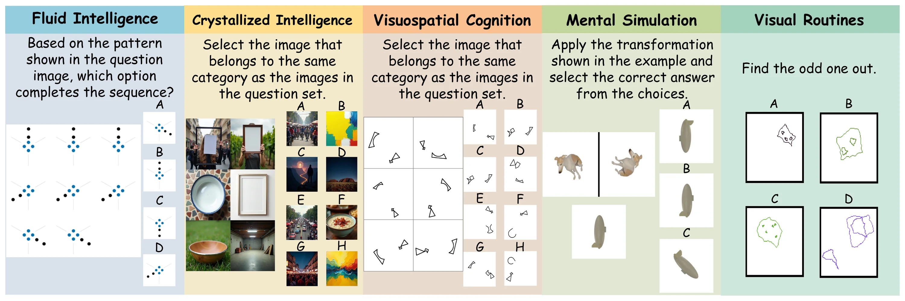
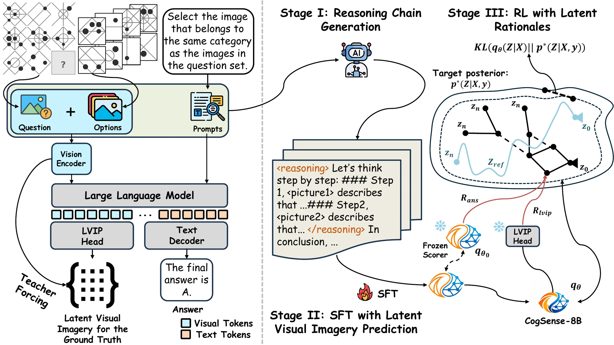
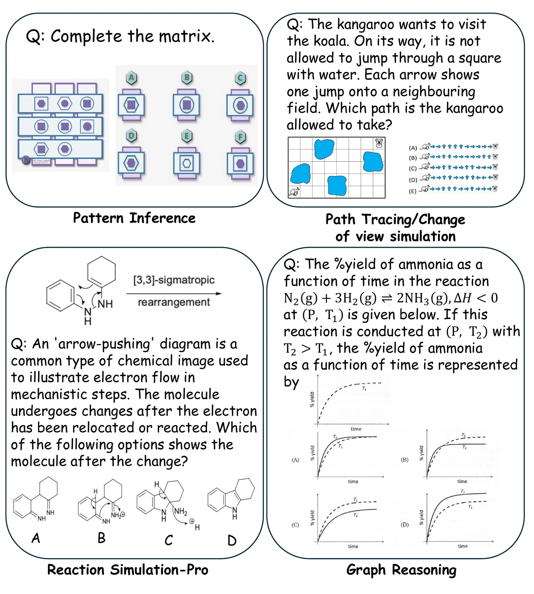
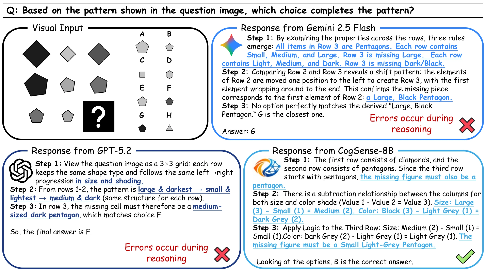
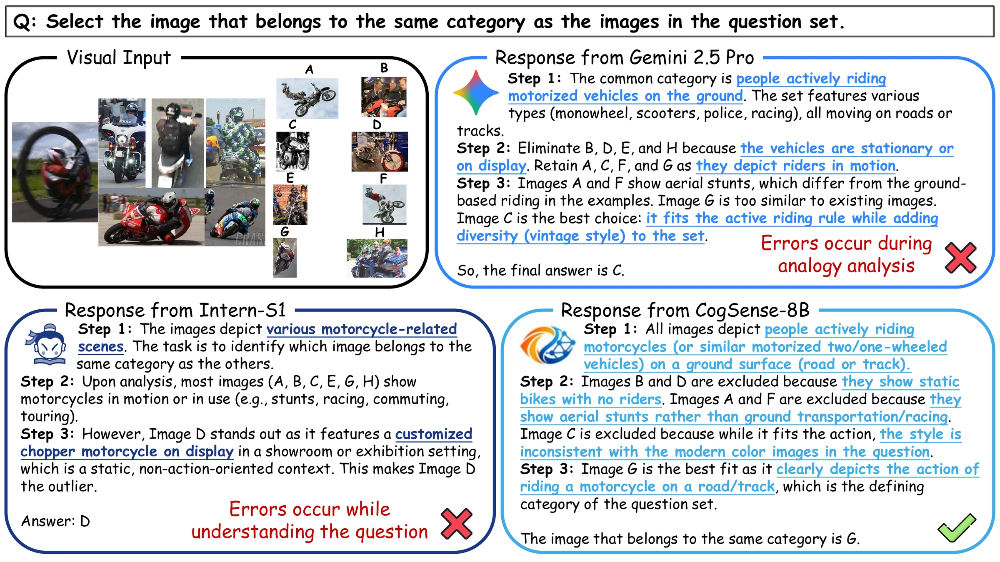
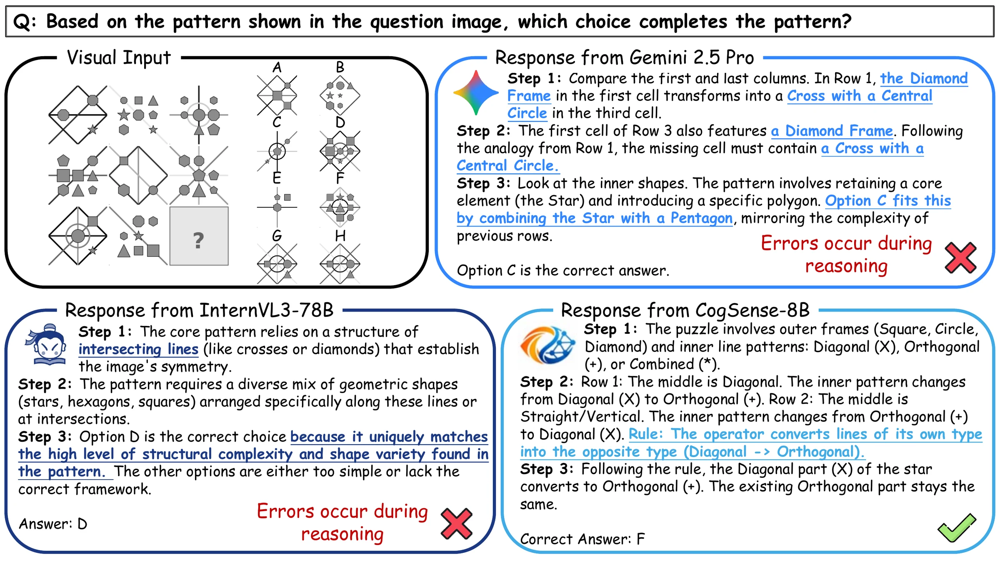

Toward Cognitive Supersensing in Multimodal Large Language Models
*Equal contribution§Project lead†Corresponding author
1University of Illinois Urbana-Champaign 2PediaMed AI
Paper Code Model Data Citation
Today's multimodal models can describe what they see. Can they also reason with what they imagine?
We introduce Cognitive Supersensing, a training paradigm that gives MLLMs a latent visual imagery channel: alongside its chain of thought, the model predicts how the answer should look, and reinforcement learning rewards rationales that stay visually consistent with it. To measure the gap, we build CogSense-Bench, a VQA benchmark spanning five dimensions of human visual cognition.

Key takeaways
- 01Text is a brittle interface for visual cognition. The best closed model, GPT-5.2, averages 40.3 on CogSense-Bench; our 20-person human study averages 88.4. Chain-of-thought in words alone does not close the gap.
- 02Imagining the answer helps. Adding the Latent Visual Imagery Prediction (LVIP) head to supervised fine-tuning lifts the average from 62.3 to 68.0, with the largest jump on crystallized intelligence (+12.0).
- 03Rewarding visually grounded rationales compounds the gain. RL over latent rationales, scored by answer evidence and LVIP consistency, brings CogSense-8B to 73.8: best on every dimension, +33.5 over GPT-5.2 and +4.7 over the best fine-tuned baseline.
- 04The imagery is causal, not a shortcut. Corrupting it mid-reasoning derails the trajectory, patching it shifts answer probabilities, and linear probes decode the answer from it with rising accuracy as reasoning unfolds.
- 05Gains transfer and general skills stay intact. On out-of-domain EMMA, CogSense-8B gains +6.2 in chemistry and +8.8 in math, while matching its backbone on eight general and spatial VQA benchmarks.
CogSense-Bench
Most VQA benchmarks test what a model recognizes. CogSense-Bench tests how it reasons over what it sees: inducing abstract rules, structuring space, simulating transformations and directing attention. Its five dimensions follow established constructs from cognitive science, and each draws on existing visual-reasoning datasets reformatted as multiple-choice VQA, with a 105.4K-pair train split and a disjoint 1,000-question test split.
01What the train split is made of
Crystallized intelligence is the largest share at 37%, built from real-world Bongard problems. Fluid intelligence follows at 28% from Raven-style matrices. The test split is sampled in the same proportions and removed from training, so there is no leakage.
Hover a slice or a row to see its sources.
Cognitive Supersensing
Many steps of visual reasoning, like rotating a shape, simulating a transformation or inducing a rule in a matrix, are naturally geometric and continuous. Forcing them into discrete text tokens loses structure. Inspired by the visuospatial sketchpad of human working memory, we let the model keep part of its reasoning in a latent visual space, while language still provides high-level guidance and the final explanation.

The LVIP head: imagine the answer before naming it
Humans solve matrix puzzles by constructive matching: picture what the missing piece should look like, then compare. The Latent Visual Imagery Prediction head is a two-layer MLP on the shared backbone. It pools the hidden states of the option-image tokens and predicts the visual-encoder embedding of the correct option. Because it reads hidden states conditioned on the rationale so far, its prediction becomes a running visual hypothesis that sharpens as reasoning proceeds.
Reasoning chain generation
A teacher MLLM (GPT-5) writes step-by-step rationales for each training question. Chains that reach the wrong answer or hallucinate are filtered out, giving a clean CoT corpus for SFT.
SFT with latent visual imagery prediction
The model learns to write the rationale and, jointly, to predict the latent of the correct option image. The target is the frozen visual encoder's embedding of that option.
RL with latent rationales
A GFlowNet samples rationales in proportion to a reward that mixes answer evidence from a frozen scorer with LVIP grounding. Reference-guided filtering and SubTB on densified prefix rewards keep it stable.
At inference, CogSense-8B samples several rationales, decodes an answer from each, and keeps the one with the highest length-normalized evidence under the frozen scorer: a simple MAP selection over latent rationales that makes it less sensitive to any single brittle chain.
Leaderboard
CogSense-8B is best on all five dimensions despite being an 8B model. Closed frontier models stay near 30–40, and fine-tuning open models on our train split helps a lot but still leaves a gap: CogSense-8B beats the same fine-tuned backbone (Qwen3-VL-8B FT) by +11.5, so the gain comes from the method rather than the data. Click a column to sort.
Bold: best model. Underline: runner-up. Red numbers: CogSense-8B's margin over the runner-up. Human row is a reference, not ranked.
How the human baseline was measured
01Where the gap to humans remains
For each dimension, the best closed-source model, the best fine-tuned baseline, CogSense-8B and humans. CogSense-8B nearly reaches human level on crystallized intelligence (91.0 vs 91.3) and more than doubles the best closed model on fluid intelligence.
Mental simulation and visual routines stay hardest: humans score 97.9 and 78.7, and every model, ours included, is still far below.
02Every component adds up
Starting from Qwen3-VL-8B (35.5), plain SFT on our train split reaches 62.3. LVIP adds +5.7 on top of SFT. For RL, GRPO helps, but latent-rationale RL helps more, and the two are complementary.
The full recipe, SFT with LVIP followed by RL with latent rationales, is best on every dimension at 73.8, ahead of also stacking GRPO (71.5).
Is the imagery really used?
A latent supervised by the answer could, in principle, be a shortcut that simply encodes the label. We test whether the intermediate LVIP states instead carry progressively built, causally used visual structure, by reading them out at steps 0–40 of the chain of thought.
Noise injection
MSE between the intermediate imagery and the ground-truth latent. Gaussian noise at step 30 sends it back up; the clean run keeps converging.
Latent patching
Swapping latent states between correct and incorrect runs moves the probability of the correct answer with the patch.
Linear probing
A linear classifier on the intermediate imagery predicts the answer better and better as reasoning unfolds.
Together: the uncorrupted intermediate state matters for where reasoning ends up, it steers the answer when transplanted, and it is constructed step by step rather than fixed from the start, which rules out a trivial answer-conditioned shortcut.
Beyond the benchmark
01Out-of-domain science and math
EMMA's chemistry and math subsets put images in both the question and the options, and none of these problems resemble our training data. CogSense-8B improves on its backbone by +6.2 in chemistry and +8.8 in mathematics, suggesting it learns transferable visual-cognition patterns rather than overfitting.

02General abilities are preserved
On five general vision-language benchmarks and three spatial ones, CogSense-8B matches or slightly exceeds its backbone. The biggest gains are on spatial reasoning: +4.4 on MMSI-Bench and +2.2 on ViewSpatial-Bench.
The one dip is HallusionBench (−0.6), which is OCR-heavy: post-training trades a little text-extraction skill for stronger visuospatial logic.
Reasoning side by side
Underlined sentences are the decisive steps. Frontier models often latch onto a plausible but wrong rule; CogSense-8B states the underlying pattern concisely and follows it to the answer.



Citation
@inproceedings{li2026cognitive,
title = {Toward Cognitive Supersensing in Multimodal Large Language Models},
author = {Li, Boyi and Shen, Yifan and Liu, Yuanzhe and Xu, Yifan and
Liu, Jiateng and Li, Xinzhuo and Li, Zhengyuan and Zhu, Jingyuan and
Zhong, Yunhan and Lan, Fangzhou and Cao, Jianguo and Rehg, James M. and
Ji, Heng and Lourentzou, Ismini and Cao, Xu},
booktitle = {Advances in Neural Information Processing Systems (NeurIPS)},
year = {2026}
}